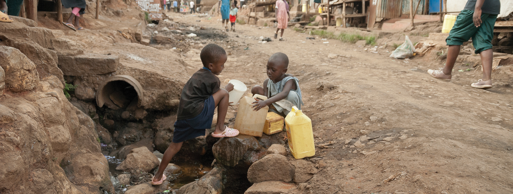
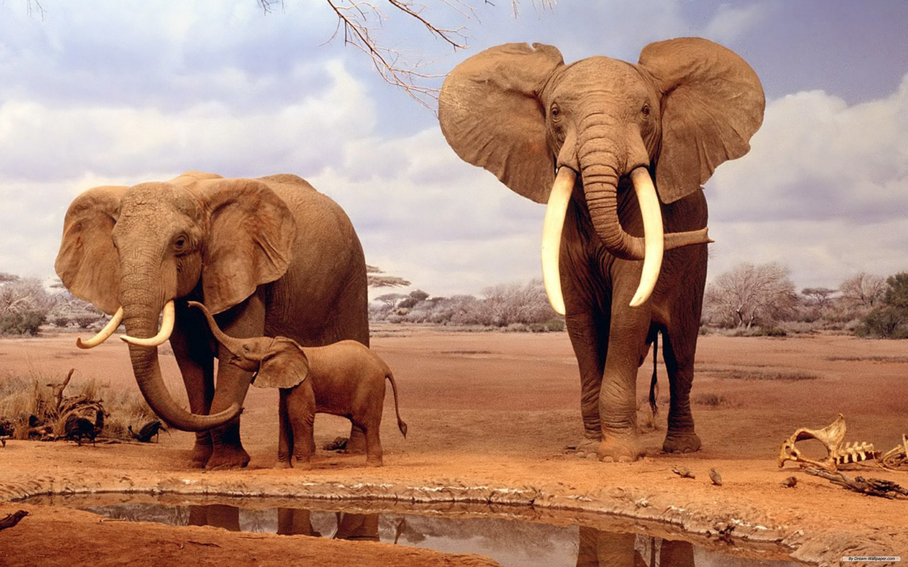

Даже в XXI веке Африка является непонятным и загадочным континентом для многих путешественников из Европы. Северной Америки и Азии. Действительно, даже ученые, прожившие многие годы на «Черном континенте», не всегда понимают традиции, обычаи и культурные особенности африканских народов. Следует сделать вывод, что Африка такой же таинственный для современных западных людей континент, как и само его название. Ученые до сих пор не могут с уверенностью сказать, откуда взялось слово «Африка». Большинство историков полагают, что «Африкой» древние римляне называли северную часть современной Африки, входившую когда-то давно в состав Римской империи.
население Африки уже превышает 1 млрд. человек. Это около 15% всего населения Земли. По официальным данным, ежегодно население Африки увеличивается примерно на 30 млн. человек.Почти все население Африки относится к негроидной расе, которая делится на меньшие расы. Кроме того, существует еще несколько африканских рас – эфиопы, капоидная раса и пигмеи. На севере Африки проживают также представители европеоидной расы.
Что же касается африканских озер, то самые большие из них – Виктория, Танганьика, Ньяса, Чад и Рудольф.В Африке находятся несколько горных систем - Абердарский хребет, Атласские горы и Капские горы. Самая высокая точка этого континента – потухший вулкан Килиманджаро (5 895 метров). Немного меньшая высота у горы Кения (5 199 м) и пика Маргарита (5 109 м).
Самая длинная река в Африке – Нил (6 671 км), протекающая по территории Судана, Уганды и Египта. Кроме того, в число крупнейших африканских рек входят Конго (4 320 км), Нигер (4 160 км), Замбези (2 660 км) и Уаби-Шэбэлле (2 490 км).
Африка с востока и юга омывается водами Индийского океана, на западе – Атлантического океана, на северо-востоке – Красного моря, а на севере – Средиземного моря. В состав континента Африка входят многочисленные острова. Общая площадь Африки – 30,2 млн. кв. км, включая и прилегающие острова (это 20,4% территории Земли). Африка является вторым по размерам континентом на Земле.
Расположение
Африка расположена по обе стороны от экватора, и имеет жаркий климат, который колеблется от тропического до субтропического. В северной Африке много пустынь (например, крупнейшая в мире пустыня Сахара), а в центральных и южных районах этого континента находятся саванные равнины и джунгли. Самая высокая температура в Африке была зарегистрирована в 1922 году в Ливии - +58С.
Животные
Несмотря на то, что в массовом сознании Африка считается «жаркой землей, где никогда не идет дождь», на этом континенте есть очень много рек и озер.
Поздравляю Папу с Днём Рождения !!! Мы скучаем по вам и передаём привет Элине Удачного полёта любим вас и ждём